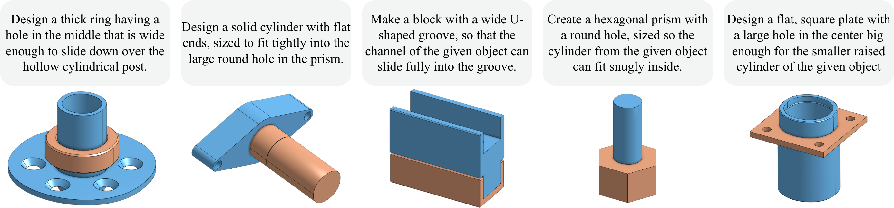

SIGGRAPH Asia 2026 Conference Paper
CADKnitter Compositional CAD Generation from Text and Geometry Guidance
1FPT Corporation 2MBZUAI 3University of Liverpool 4Keio University
Abstract
Computer-aided design (CAD) defines 3D models as compact, precise, and editable representations, making it directly useful for several fields. Recently, CAD generation has been gaining more attention in both the research community and industry. Crafting CAD models has long been a painstaking and time-intensive task, demanding both precision and expertise from designers. Prior works have achieved early success in single-part CAD generation, which is not well-suited for real-world applications, as multiple parts need to be assembled under semantic constraints and geometric compatibility. In this paper, we propose CADKnitter, a compositional CAD generation framework with geometric-guiding cues to steer diffusion sampling. CADKnitter is able to generate a complementary CAD part that follows both the geometric constraints of the given CAD model and the semantic constraints of the desired design text prompt. We also curate a dataset, so-called KnitCAD, containing over 310,000 samples of CAD models, along with textual prompts and assembly metadata that provide semantic and geometric constraints. Intensive experiments demonstrate that our proposed method outperforms other state-of-the-art baselines by a clear margin.

Video
Results
Explore in 3D
Drag to rotate, scroll to zoom
Input CAD Generated by CADKnitter
Qualitative comparisons
In a real design workflow
- The designer models only the base part.
- They select the desired contact faces and ask for
a vertical bar with a hole
, then edit and duplicate the generated part for the other side. - Next come
a cylinder fitting the holes
anda roller fitting the cylinder
. - The original and generated parts are mated into a working assembly.
KnitCAD dataset
KnitCAD contains over 310,000 annotated samples for compositional CAD generation. Each sample pairs a conditional CAD model with a ground-truth complementary part, a text prompt and assembly metadata that provide the semantic and geometric constraints.
BibTeX
@inproceedings{le2026cadknitter,
author = {Le, Tri and Nguyen, Khang and Huang, Baoru and Ta, Tung D and Nguyen, Anh},
title = {CADKnitter: Compositional CAD Generation from Text and Geometry Guidance},
booktitle = {SIGGRAPH Asia 2026 Conference Papers},
year = {2026},
}